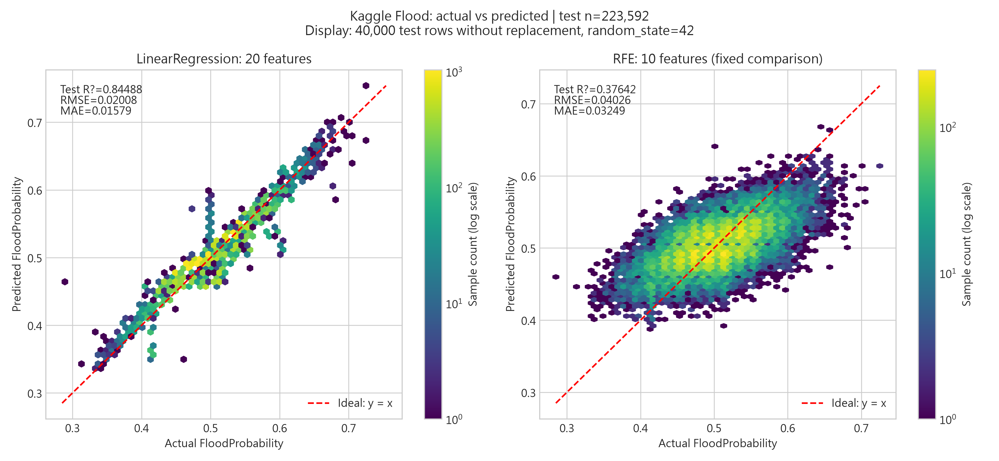
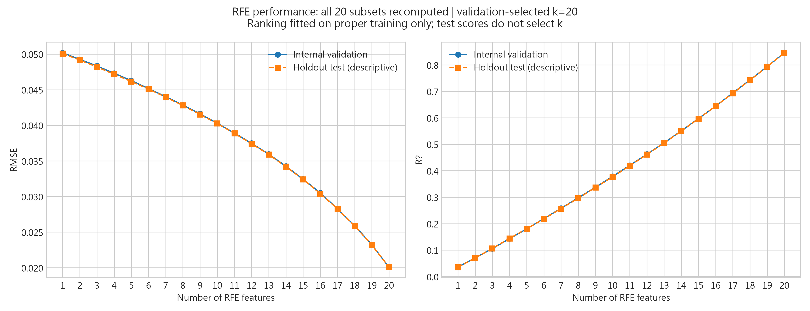
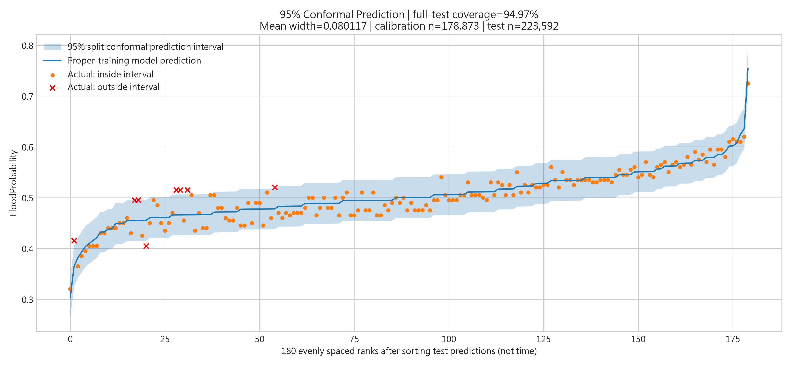
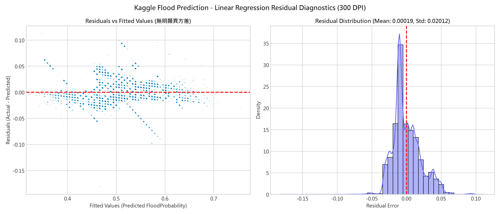
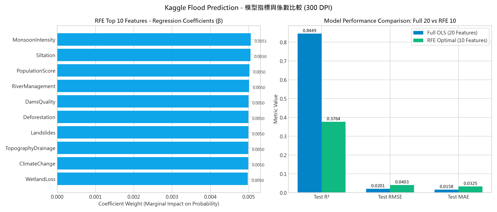

【圖一】LinearRegression 實際值與預測值比較圖（Full 20 特徵 vs. RFE 10 特徵）
300 DPI · 測試集 n=223,592 · 雙模型對照

嚴格遵循 CRISP-DM 方法論，結合 Scikit-Learn 多元線性迴歸、RFE 特徵淘汰與 95% 保形預測區間（Conformal Prediction Interval），為國土防洪與防災規劃提供兼具高準確度與統計不確定性邊界的科學決策。
即時調整各項環境、水文與政策變數，模型將於瀏覽器中快速計算洪災發生機率、95% 保形預測區間與各因子邊際風險貢獻。
從商業與水利防洪痛點出發，依循規範化生命週期完成資料清洗、模型構建與靜態發布。
點擊表格中任意一筆測試集真實紀錄，即可將各項指標帶入模擬器重新試算並驗證預測誤差。
| # | 季風強度 | 河川治理 | 森林砍伐 | 都市化 | 水庫品質 | 市區排水 | 土石流 | 實際機率 | ML預測 | 殘差誤差 | 操作 |
|---|
嚴謹檢驗回歸假設、殘差常態性、RFE 篩選前後性能差異，並提供經獨立校準集驗證之 95% 統計信心區間。




